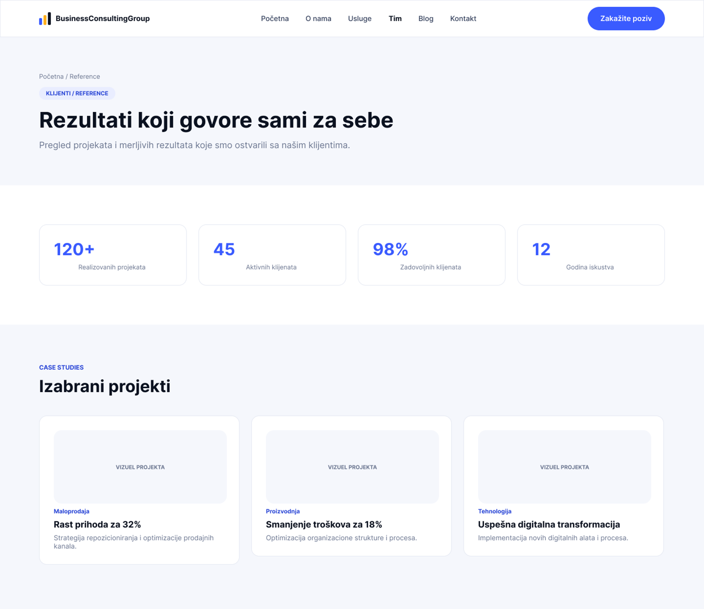
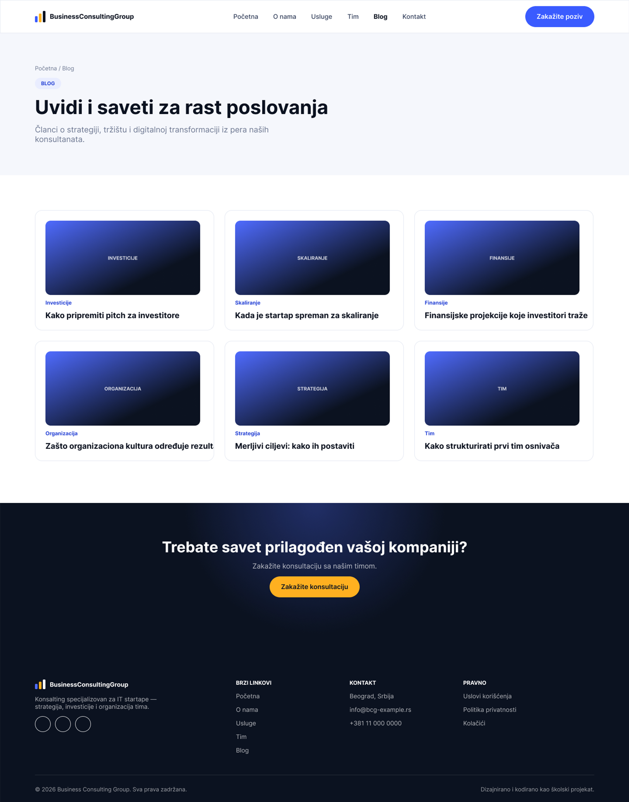
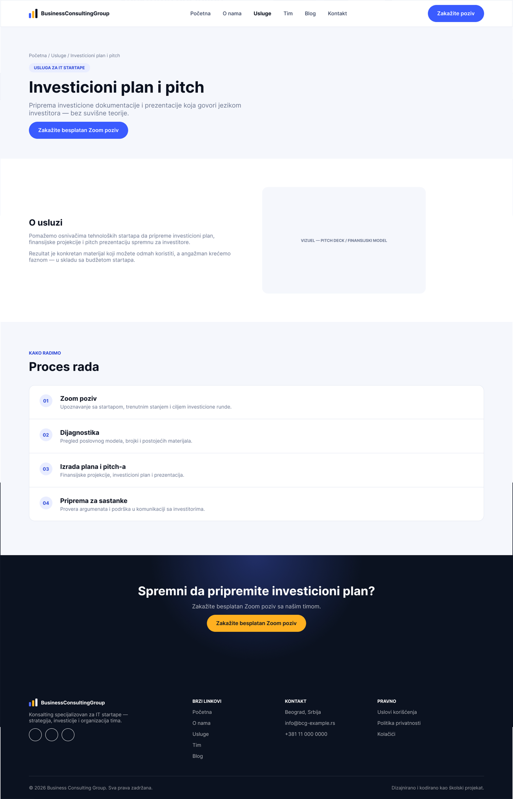

Stranica koja ne prodaje uslugu, već poverenje kroz misiju, viziju i metodologiju rada, pre nego što posetilac uopšte stigne do cenovnika.



Stranica O nama ima drugačiji zadatak od početne ne treba da ubedi posetioca da klikne odmah, već da mu pokaže da je kompanija ozbiljna i da razume s kim radi. Zato hero ne otvara ponudom, već jasnim stavom: "Konsultanti koji razumeju tehnološke startape".
Sadržaj je organizovan kroz misiju i viziju, a zatim metodologiju rada u tri koraka analiza, strategija, implementacija kako bi posetilac tačno znao šta ga očekuje ako odluči da zakaže poziv. Sekcija sertifikata i partnera na kraju dodatno gradi poverenje pre nego što stranica pređe na poziv na akciju.